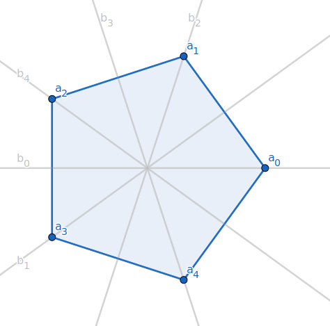
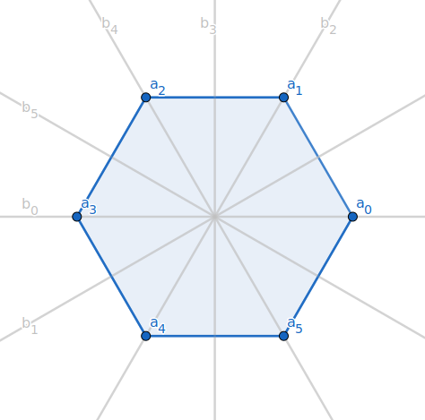

| `cc P(A)` | 集合 `A` 的幂集, 即 `A` 的全体子集构成的集合 |
| `cc B(A)` | 集合 `A` 上的全体二元关系, 即 `cc P(A xx A)` |
| `cc E(A)` | 集合 `A` 上的全体等价关系 |
| `cc T(A)` | 集合 `A` 上的全体变换, 即全变换半群 |
| `E(S)` | 代数 `S` 上的全体幂等元 |
| `Z(S)` | 半群 `S` 的中心 (德语: Zentrum), 即和 `S` 中任意元素都可交换的元素的集合 |
| `End(S)` | 半群 `S` 的自同态映射的全体 |
| `AntiEnd(S)` | 半群 `S` 的反自同态映射的全体 |
| `Aut(S)` | 半群 `S` 的自同构映射的全体 |
| `S_A`, `S_n`, `A_n` | 集合 `A` 上的对称群, `n` 次对称群, `n` 次交代群 |
| `(ZZ, +)` | 整数加群 |
| `(U_n, *)` | `n` 次单位根群 |
| `D_(2n)` | 二面体群 |
代数 令集合 `S != O/`, `*` 为 `S` 上的二元运算, 称 `(S, *)` 为一个代数 (或广群, 或半群胚), 如果 `*` 在 `S` 上封闭, 即对任意 `a, b in S`, 有 `ab := a * b in S`. 或等价地, `S S overset d = {s_1 s_2 | s_1, s_2 in S} sube S`. 如果 `|S| = 1`, 称这个代数是平凡的. 例如, 平凡半群, 平凡群等. 如果 `|S| lt oo`, 称这个代数是有限的. 例如, 有限半群, 有限群等; 否则称它为无限的.
我们还会遇到环上的代数, 这时要求乘法是双线性的.
设 `S` 为一半群, 称 `a, b in S` 可交换, 如果 `a b = b a`. 称 `Z(S) := {a in S | (AA x in S) a x = x a}` 为 `S` 的中心 (德语: Zentrum), 即与 `S` 中任意元素都可交换的元素的集合.
群的等价定义
设 `G` 为半群, `G` 中存在右幺元, 且每个元素都存在右逆元, 即
`(EE e in G)` `(AA a in G)` `a e = a`,
`(AA a in G)` `(EE b in G)` `a b = e`.
可以证明 `G` 为一群. 事实上, 任取 `a in G`, 设 `b` 是 `a` 的右逆元, `c` 是 `b` 的右逆元, 有
`b a` `= b a (b c)` `= b (a b) c` `= b c` `= e`,
`e a = (a b) a` `= a (b a) = a`.
所以 `e` 也是左幺元, `b` 是 `a` 的左逆元; 故 `G` 为一群.
类似可证: 若半群 `G` 上存在左幺元, 且每个元素都存在左逆元, 则 `G` 也为一群.
令 `bbb F` 为一数域, 则
`GL_n(bbb F) = {bm A in bbb F^(n xx n) | |bm A| != 0}`,
`SL_n(bbb F) = {bm A in bbb F^(n xx n) | |bm A| = 1}`,
`U_n (bbb F) = {bm A in bbb F^(n xx n) | bm (A'A) = bm E}`.
关于矩阵的通常乘法都成群, 分别称为 `bbb F` 上的一般线性群
(`n` 阶非奇异矩阵的集合), 特殊线性群
(行列式为 1 矩阵的集合) 和正交群 (正交矩阵的集合).
正 `n` 边形 (`n ge 3`) 全体对称构成的集合记为
`D_(2n) = {1 = a_0, a_1, cdots, a_(n-1), b_0, b_1, b_2, cdots, b_(n-1)}`,
其中 `a_i` 表示绕几何中心逆时针旋转 `2 pi i // n` 的变换,
`b_i` 表示沿第 `i` 条对称轴 `l_i` (与 `x` 轴夹角是 `pi i // n`) 的反射变换.
则 `D_(2n)` 为一群, 称为二面体群 (dihedral group).
其中, `{a_0, cdots, a_(n-1)}` 是一个循环子群, `b_0, cdots, b_(n-1)` 的阶全为 2.


生成元 二面体群可以由 `a := a_1` 和 `b := b_0` 生成. 事实上 `a_i = a^i`, `b_i = a^i b = b a^-i`. 上式从右向左阅读, 意思是, 沿 `l_i` 的反射变换, 可以分解为关于 `x` 轴的反射变换, 与一个旋转变换的复合.
中心 `n` 为偶数时, `a^(n//2)` 的阶恰好是 2 (转半圈), 则 `a^(n//2) b` `= b a^(-n//2)` `= b a^(n//2). 即 `a^(n//2)` 与 `b` 可换, 从而与群中的所有元素可换. 因此 `n` 为奇数时 `D_(2n)` 的中心是 `{1}`, 偶数时中心是 `{1, a^(n//2)}`.
例题 `n = 5` 时, 求 `b_2 b_3`. `b_2 b_3` `= a^2 b a^3 b` `= a^2 (b a^-2) b` `= a^2 (a^2 b) b` `= a^4`.
魔方的全体变换构成 Rubik 群.
设 `S` 为半群, `s in S`, 则用 `s` 左乘 `S` 的任一元素诱导出 `S`
上的左平移变换
`s_l: S to S`
`a to s a`.
类似, 用 `s` 右乘 `S` 的任一元素诱导出 `S` 上的右平移变换 `s_r`.
只证 3 `rArr` 1. 任取 `a in G`, 由 `a_r` 为一满射变换知, `(EE e in G)` `a_r(e) = a`, 即 `e a = a`. 从而对任意 `b in G`, 由 `a_l` 为一满射变换知, `(EE b_0 in G) a_l(b_0) = b`, 即 `a b_0 = b`. 所以 `e b = e a b_0 = a b_0 = b`. 这说明 `e` 为左幺元. 再令 `e` 在 `b_r` 下的原像为 `b^-1`, 有 `b^-1 b = e`, 即 `b^-1` 为 `b` 的左逆元. 由前述群的等价定义知 `G` 为一群.
有限双消半群为群.
因为有限集上的变换为一单射当且仅当它为一满射.
群上的幂运算 令 `(G, *)` 为一群, `a in G`, `n in ZZ^+`. `a^n` 的定义与半群的相同, 此外 `a^0 := e`, `quad a^-n := (a^-1)^n`. 从而通常的指数规则在群中仍成立: `(AA m, n in ZZ^+) a^m a^n = a^(m+n)`, `(a^m)^n = a^(m n)`. 当 Abel 群被记作 `(G, +)` 时, 也将 `a^n` 写成 `n a`, 将 `a^-1` 写成 `-a`. 且在 Abel 群中, 满足第三条指数规则: `(AA m in ZZ)` `(AA a, b in G)` `(a b)^m = a^m b^m`.
群 `G` 中元素 `a` 的阶 (order)定义为
`|a| = min{m in ZZ^+ | a^m = e}`;
若上式右端的集合为空, 称 `a` 的阶为无限, 记为 `|a| = oo`.
有限群 `G` 的阶定义为它的元素个数 `|G|`.
阶的另一种记号是 `"ord " a`, `"ord " G`.
若 `a, b in G`, 且存在 `g in G` 使得 `b = g a g^-1`, 则称 `a, b` (关于 `g`) 共轭.
设 `a` 是群 `G` 中的 `n` 阶元, 则对任意 `m in ZZ`, `a^m = e iff n | m`.
`lArr`) 显然.
`rArr`) 令 `m = q n + r`, `q in ZZ`, `0 le r lt n`. 则
`e = a^m = a^(q n + r)` `= (a^n)^q a^r = e a^r = a^r`.
由 `r lt n` 知, 只可能是 `r = 0`, 从而 `n | m`.
设 `a` 是 `n` 阶群 `G` 的元素, 则 `|a| le n`.
由群的封闭性知, 有 `n+1` 个元素 `a^0, a^1, cdots, a^n in G`. 但 `|G| = n`, 由鸽巢原理, 存在 `i gt j`, 使 `a^i = a^j`, `i, j = 0, 1, cdots, n`. 所以 `a^(i-j) = a^i a^-j = a^j a^-j = e`. 设 `|a| = m`, 则 `m | i-j gt 0`, 因此 `m le i-j le n`.
记 `|a^m| = k`, `(m, n) = d`. 由 `a^(m n/d) = a^(n m/d) = e` 得 `k | n/d`; 另一方面, 由 `a^(m k) = e` 知 `n | m k`, 从而 `n/d | m/d k`, 但 `(n/d, m/d) = 1`, 所以 `n/d | k`.
子群 令 `(G, *)` 为一群, `H` 是 `G` 的非空子集. 如果 `H` 关于 `*` 也成一群, 则称 `H` 是 `G` 的一个子群, 记作 `H le G`.
Abel 群的子群也是 Abel 群.
设群 `H le G`, 则 `H` 的幺元就是 `G` 的幺元, `a in H` 在 `H` 中的逆元就是 `a` 在 `G` 中的逆元.
幺元的惟一性由幂等元在群中的惟一性保证. 以 `a', a^-1` 记 `a` 在 `H` 和 `G` 中的逆元, 则 `a' = a' e = a' a a^-1` `= e a^-1 = a^-1`.
若 `H` 是群 `G` 的非空有限子集, 则 `H le G iff` `(AA a, b in H)` `a b in H`.
任取 `a in H`, 因 `H` 有限, `EE s gt t`, `s, t in ZZ^+`, `a^s = a^t`, 从而 `a^-1 = a^(2(s-t)-1) in H`.
回顾半群的中心的定义: `Z(G) := {a in G | (AA x in G) a x = x a}`. 若 `G` 为一群, 可以证明 `Z(G) le G`; 若 `G` 为一 Abel 群, 则 `Z(G) = G`.
令 `(S, *)`, `(T, @)` 为两个半群胚 (半群, 群). 称映射 `f: S to T` 为
`S` 到 `T` 的一个半群胚 (半群, 群) 同态 (映射), 如果
`f(a * b) -= f(a) @ f(b)`.
在不引起混淆的情况下, 上式也可以写为
`f(a b) -= f(a) f(b)`.
当 `f` 为一单射 (满射, 双射) 时, 称 `f` 为一单同态 (满同态,
同构) 映射. 显然同构映射的逆映射也为一同构映射.
如果存在一个从 `S` 到 `T` 的同构映射, 则称 `S`, `T` 同构, 记为
`S ~= T`.
群同态的复合仍为一同态映射.
`f: S to T` 为一同态映射时, `C_("Ker"f) ~= "Im"f`, 其中 `C_("Ker"f)` 是等价关系 `"Ker"f` 的一个截面. 特别当 `f` 为一满同态时, `C_("Ker"f) ~= T`, 当 `f` 为一单同态时, `S ~= "Im"f`.
群的同态像 (原像) 仍为一群. 令 `G`, `H` 为两个群, `G_1 le G`, `H_1 le H`, `f: G to H` 为一群同态映射, 则 `f(G_1) le H`, `quad f^-1(H_1) le G`. 特别有 `"Im"f le H`, `"Im"f^-1 le G`.
任取 `f(a), f(b) in f(G_1)`, 其中 `a, b in G_1`, 从而 `f(a) f(b)^-1 = f(a) f(b^-1) = f(a b^-1) in f(G_1)`. 因此 `f(G_1) le H`. 又任取 `c, d in f^-1(H_1)`, 则 `f(c), f(d) in H_1`, 从而 `f(c d^-1) = f(c) f(d^-1) = f(c) f(d)^-1 in H_1`. 所以 `c d^-1 in f^-1(H_1)`, 于是 `f^-1(H_1) le G`.
直接应用 (注意 `{e_H}` 自成一平凡群). 下面设 `"Ker"f = {e_G}`, 对任意满足 `f(a) = f(b)` 的 `a, b in G`, 有 `e_H = f(a) f^-1(b) = f(a b^-1)`. 但 `"Ker"f = {e_G}`, 所以 `a b^-1 = e_G`, 即 `a = b`. 因此 `f` 是单射.
群 `G` 到自身的同态称为自同态, `G` 上全体自同态关于映射的合成构成半群 `End(G)`; `G` 到自身的同构称为自同构, `G` 上全体自同构为一群 `Aut(G)`. 注意自同态的等式 `f(a)f(b) = f(a b)` 两边的乘法是同一个群的乘法因而是同一种乘法, 因此 `f(e)f(e) = f(e*e) = f(e)`, 这推出 `f(e) = e`, 即自同态保持幺元不动. 我们在第四章进一步讨论自同构群.
生成集 令 `G` 为一群, `X` 是 `G` 的非空子集, 记 `(:X:)` 为 `G` 的所有包含 `X` 的子群的交. 由于 `(:X:)` 是子群的交, 因此它也是一子群, 且是 `G` 的含 `X` 的最小子群. 称 `(:X:)` 为由 `X` 生成的子群, `X` 称为 `(:X:)` 的生成集. 特别若 `(:X:) = G`, 则称 `X` 为 `G` 的生成集. 如果 `|X| lt oo`, 则称 `G` 为一有限生成群.
以 `X^-1` 记 `X` 中全体元素的逆组成的集合, 考虑到群上运算的封闭性和逆元的存在性, 则由 `X` 生成的子群是 `X uu X^-1` 中任意有限个元素乘积的全体, 即 `(:X:) = {prod_(i=1)^n a_i | a_i in X uu X^-1, i = 1, 2, cdots, n, n in ZZ^+}`. 当 `X = {x_1, x_2, cdots, x_m}` 时, `(:X:)` 简记为 `(:x_1, x_2, cdots, x_m:)`, 特别, `(:{a}:)` 简记为 `(:a:)`. 因此 `(:a:) = {a^k | k in ZZ}`.
设群 `G = (:a:)`, 则称 `G` 是由 `a` 生成的循环群, `a` 是 `G` 的一个生成元.
显然有 1 `iff` 2, 3 `rArr` 2. 下证 1 `rArr` 3. 令 `G = (:a:)` 为一 `n` 阶循环群, 则 `|a| = n`. 关于 `n` 的任意正因子 `t`, 设 `n = s t`, `s in ZZ^+`, 则 `a^s in G`, 且 `|a^s| = t` ().
循环群的子群必为循环群. 下面给出构造性证明.
设 `G = (:a:)`, `H le G`. `|H| = 1` 的情形是平凡的.
若 `|H| ge 2`, 可取最小的正整数 `t` 使得 `a^t in H`, 则
`(:a^t:) sube H`.
反之 `AA a^k in H`, 设
`k = qt + r`, `q in ZZ`, `0 le r lt t`,
则 `a^r = a^(k-q t) = a^k a^(-q t) in H`.
由 `t` 的取法知 `r = 0`. 因此
`a^k = a^(q t) in (:a^t:)`.
即 `H sube (:a^t:)`.
设 `G` 为一群, `a, b in G`, 且 `a, b` 间的乘法可交换. `|a| = m`, `|b| = n`, `(m, n) = 1`, 则 `|a b| = m n`.
记 `|a b| = k`. 首先由 `(a b)^(m n) = a^(m n)b^(m n) = e e = e` 有 `k | m n`. 其次由 `b^(m k) = a^(m k) b^(m k) = (a b)^(m k) = e` 知, `n | m k`, 而 `(m, n) = 1`, 所以 `n | k`. 同理 `m | k`, 再次由 `(m, n) = 1` 得 `m n | k`.
令 `G` 为一 `n` 阶 Abel 群, `a` 为 `G` 中的最大阶元, 则对任意 `b in G`, `|b|` 整除 `|a|`.
记 `|a| = m`, `|b| = l`, 且 `l = prod_(i=1)^r p_i^(l_i)`, `quad m = prod_(i=1)^r p_i^(m_i)`. 其中 `p_i` 为两两不同的素数, `l_i`, `m_i` 是非负整数, `i = 1, 2, cdots, r`, `r in ZZ^+`. 若 `l !| m`, 则存在 `1 le k le r`, 使得 `l_k gt m_k ge 0`. 令 `l = s t`, `t = p_k^(l_k)`, `m = u v`, `v = p_k^(m_k)`. 则 `|a^v| = u`, `|b^s| = t`, `(u, t) = 1`. 当然 `a^v` 与 `b^s` 的乘法可交换, 从而 `|a^v b^s| = u t gt m`, 与 `m` 是元素的最大阶矛盾. 因此 `l | m`.
有限 Abel 群何时为循环群 显然循环群都是 Abel 群. 反之, `n` 阶 Abel 群 `G` 为循环群的充要条件是对任意正整数 `m`, `x^m = e` 在 `G` 中最多有 `m` 个解.
必要性. 令 `G` 是循环群, 对任意 `m in ZZ^+`, 记方程 `x^m = e` 的解集为
`S_m = {x in G | x^m = e}`.
任取 `a, b in S_m`, 可以验证 `a b^-1 in S_m`, 故 `S_m le G`.
而循环群的子群必为循环群, 所以可设 `S_m = (:c:)`, `c in S_m`.
而 `c^m = e`, 故 `|S_m| = |c| le m`.
充分性. 只需证 `G` 中存在 `n` 阶元.
令 `a` 为 `G` 中最大阶元, `|a| = k`, 则 `k le n`.
由, 对任意
`b in G`, 有 `|b|` 整除 `k`, 于是 `b^k = e`, 即方程 `x^k = e`
在 `G` 中至少有 `n` 个解, 由条件知 `n le k`. 于是 `n = k`, 即 `G =
(:a:)`.
设集合 `A != O/`, 记集合 `A` 上全体可逆变换的集合为 `S_A`.
容易证明 `S_A` 关于通常的变换合成为一群, 称为集合 `A`
上的对称群. `S_A` 的子群称为集合 `A` 上的置换群.
若 `A` 为有限群, `|A| = n`, 则 `A` 可以等同于 `{1, 2, cdots, n}`,
`S_A` 记为 `S_n`, 称为 `n` 次对称群, 其子群称为 `n`
次置换群. `S_n` 中的元素称为 `n` 次置换, 常记为
`sigma = (1, 2, cdots, n; i_1, i_2, cdots, i_n)`.
其中 `i_j = sigma(j)`, `j = 1, 2, cdots, n`. 显然 `i_1 i_2 cdots i_n`
为 `1 2 cdots n` 的一个排列, 因此 `|S_n| = n!`.
Cayley 定理: 任一抽象群都同构于某集合上的一个置换群
令 `G` 为一群, 以 `a_l` 记元素 `a in G` 诱导的左平移变换, 则映射
`eta: G to S_G`
`a to a_l`
为一单同态, 因此 `G ~= "Im"eta le S_G`.
这里 `"Im"eta` 是 `S_G` 的子群, 由定义它是置换群.
显然该映射是良定义的. 下证它是单射. `AA a, b in G`, 若 `eta(a) = eta(b)`, 则 `a_l = b_l`, 从而关于任意 `x in G`, `a_l(x) = b_l(x)`, 即 `a x = b x`. 特别取 `x = e`, 有 `a = b`. 因此 `eta` 是单射. 又, `AA x in G`, `(a b)_l(x) = (a b) x = a (b x)` `= a_l(b_l(x)) = (a_l b_l)(x)`. 从而 `(a b)_l = a_l b_l`, 即 `eta(a b) = eta(a) eta(b)`, 即 `eta` 为一同态.
在 `eta` 的映射下, 抽象群元素 `a` 被对应到集合 `G` 上的一个具体的置换 `a_l`, 从而将群的计算化为具体置换的计算. 这个对应称为群的 Cayley 左正则表示. Cayley 定理表明了置换的重要性: 掌握了置换群, 也就从同构意义上掌握了任意一个群.
`k`-轮换 令 `sigma in S_n`, `1 le k le n`, `i_1, i_2, cdots, i_k` 是 `1, 2, cdots, n` 中 `k` 个两两不同的数, 若 `sigma(i_1) = i_2`, `sigma(i_2) = i_3`, `cdots`, `sigma(i_(k-1)) = i_k`, `sigma(i_k) = i_1`, 而其它数在 `sigma` 下不变, 则称 `sigma` 为一`k`-轮换, 记为 `sigma = (i_1 i_2 cdots i_k)`. 特别 `k = 2` 时, 称 `sigma` 为一对换. 无公共数字的轮换称为不相交的. 恒等置换 `(1, 2, cdots, n; 1, 2, cdots, n)` 通常简记为 `(1)`.
只证 4. 令 `sigma = (i_1 i_2 cdots i_k)`, 显然 `sigma^k = (1)`; 另一方面, 对任意 `1 le m lt k`, 有 `sigma^m(i_1) = i_(m+1) != i_1`, 即 `sigma^m != (1)`. 于是 `|sigma| = k`.
令 `H le S_n`, 则要么 `H` 中不含奇置换, 要么奇置换与偶置换一样多.
不妨设有奇置换 `sigma_1 in H`. 类似地作映射
`f: sigma in H nn A_n to sigma_1 sigma in H \\ A_n`
`g: tau in H \\ A_n to sigma_1^-1 tau in H nn A_n`
来证明.
对 `m le n`, `S_m` 可以看作 `S_n` 的子群, 因为 任意 `m` 次置换可以看作一个将 `m+1, cdots, n` 映射到自身的 `n` 次置换. 同理 `A_m` 可以看作 `A_n` 的子群.
轮换型号 将 `n` 阶置换 `sigma` 表为不相交轮换的乘积, 这些轮换中 `k`-轮换的个数记为 `l_k(sigma)`, `k = 1, 2, cdots, n`. 上面 `n` 个数字称为 `sigma` 的轮换型号, 简称型号. 由于这些轮换互不相交, 有 `n = sum_(k=1)^n l_k(sigma) * k`. 因此, `n` 阶置换所有可能的型号个数等于分拆数 `p_n`.
一般置换的阶 若置换 `sigma` 被分解为不相交的轮换, 则 `sigma` 的阶等于这些轮换的阶的最小公倍数. 由于 `k`-轮换的阶是 `k`, 我们便得到一般置换的阶的计算方法.
直观上 `sigma^n` 相当于将这些不相交轮换独立地轮转, 当所有轮换恰好复位时, 有 `sigma^n = e`. 反之, 只要有一个轮换没有复位, 由于这些轮换互不相交, 有 `sigma^n != e`.
两个置换相互共轭 `iff` 它们具有相同轮换型号.
Cauchy 公式 对称群 `S_n` 中型号为 `(l_1, l_2, cdots, l_n)` 的置换个数为 `n! // prod_(k=1)^n l_k! k^(l_k)`.
首先把 `{1, 2, cdots, n}` 分成 `l_1` 个 1-子集, `l_2` 个 2-子集, ..., `l_n` 个 `n`-子集, 方法数为 (多项系数): `c := n! // prod_(k=1)^n l_k! (k!)^(l_k)`. 然后, 由于每个 `k`-子集可产生 `(k-1)!` 个不同的轮换, 所以型号为 `(l_1, l_2, cdots, l_n)` 的置换个数为 `c * prod_(k=1)^n {:(k-1)!:}^(l_k)`, 即得结论.
`r`-轮换的共轭仍为 `r`-轮换 令 `pi` 为一 `n` 阶置换, `(i_1 i_2 cdots i_r)` 为一 `r` 轮换, `r le n`, 则 `pi (i_1 i_2 cdots i_r) pi^-1` `= (pi(i_1) pi(i_2) cdots pi(i_r))`.
只需证对任意 `i in {1, 2, cdots, n}`, `i` 在两个置换下的像相等. 若 `i in {pi(i_1), pi(i_2), cdots, pi(i_r)}`, 则不妨令 `i = pi(i_1)`. 从而 `pi(i_1 i_2 cdots i_r) pi^-1(i)` `= pi(i_1 i_2 cdots i_r) pi^-1 pi(i_1)` `= pi(i_1 i_2 cdots i_r) (i_1)` `= pi(i_2)` `= (pi(i_1) pi(i_2) cdots pi(i_r)) pi(i_1)` `= (pi(i_1) pi(i_2) cdots pi(i_r)) (i)`. 若 `i !in {pi(i_1, pi(i_2), cdots, pi(i_r)}`, 则 `pi^-1(i) !in {i_1, i_2, cdots, i_r}`. 从而 `pi(i_1 i_2 cdots i_r) pi^-1(i)` `= pi pi^-1(i) = i` `= (pi(i_1) pi(i_2) cdots pi(i_r))(i)`. 所以两个置换相等.
两个 `n` 阶置换具有相同型号当且仅当它们在 `S_n` 中相互共轭. 换言之, 相同型号的元素即为 `S_n` 中的一个共轭类. 共轭类的大小可以用 Cauchy 公式计算.
在共轭变换下, 每个 `k`-轮换仍变为 `k`-轮换, 故置换的型号不变. 反之若两个置换具有相同型号, 我们考察它们对应的轮换 `sigma = (i_1, i_2, cdots, i_k)` 和 `tau = (j_1, j_2, cdots, j_k)`. 只要取置换 `pi in S_n`, 使得 `pi(i_1) = j_1`, `cdots, pi(i_k) = j_k`, 就有 `pi sigma pi^-1 = tau`. 因为各个轮换不相交, 很容易将 `pi` 的定义扩展到 `{1, 2, cdots, n}` 上. 这些关于 `pi` 共轭的轮换相乘以后, 整个置换也是关于 `pi` 共轭的.
这里的结论不适用于 `S_n` 的子群. 因为当 `S_n` 中存在 `g` 使得 `a = g b g^-1` 时, 并不保证 `g` 一定在子群中.
置换群中 `k` 阶元的个数 以 `S_3` 为例, 列出 3 的所有分拆, 每个分拆对应一种轮换型号, 即一个共轭类: 3 = 1 + 1 + 1 = 1 + 2. 三个共轭类中元素的阶分别为 `lcm(1, 1, 1) = 1`, `quad lcm(1, 2) = 2`, `quad lcm(3) = 3`. 结合 Cauchy 公式知, `S_3` 有 1 个 1 阶元, 3 个 2 阶元, 2 个 3 阶元.
`n ge 3` 时, 偶置换群 `A_n` 由所有 `3`-轮换生成. (`n = 1, 2` 时, 显然 `A_n` 为平凡群)
任取 `sigma in A_n`, 只需证 `sigma` 可以分解为 `3`-轮换的乘积.
若 `sigma = (1)`, 则 `sigma = (123)^3`.
若 `sigma != (1)`, 则 `sigma` 至少是两个不同对换的乘积, 即 `sigma`
可以分解为形如 `(a b)(a c)` 或 `(a b)(c d)` 的置换之积, 其中 `a, b, c,
d in {1, 2, cdots, n}` 且两两不同. 又
`(a b)(a c) = (a c b)`,
`(a b)(c d) = (a b)(b c)(b c)(c d) = (b c a)(c d b)`,
因此 `sigma` 可分解为 `3`-轮换的乘积.
对 `n != 2`, `S_n` 的中心是平凡群 `{(1)}`. 对 `n != 3`, `A_n` 的中心也是平凡群. `S_2, A_3` 是循环群, 中心分别是它们自己.